Mesahchie Peak, North Ridge
August 19, 2001
The idea to climb Mesahchie came from Darin Berdinka’s web site (Long since disappeared), where he describes the Mesahchie Glacier Icefall and North Ridge. It seemed like an out-of-the-way destination too, and after the solitude on Mt. Index from the previous weekend, Steve and I were getting used to it. We had thought about the North Ridge of Mt. Stuart as well, but after seeing many inquires on bulletin board sites about route conditions, I was envisioning a horde of people there. Raging fires were also causing the evacuation of many hikers from the Enchantments, a little too close for comfort.
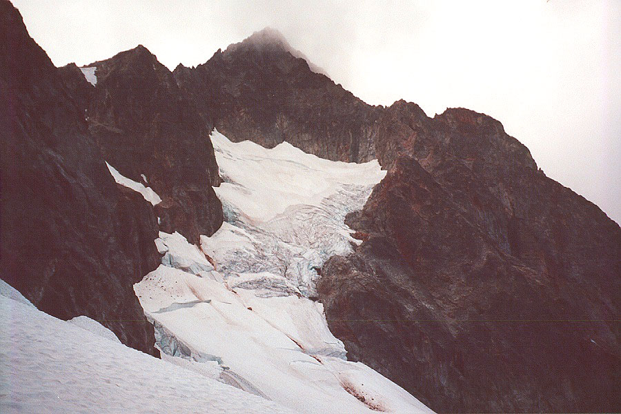
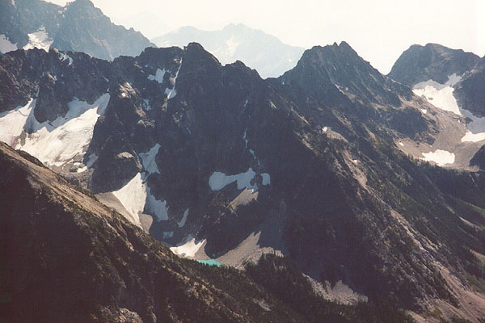
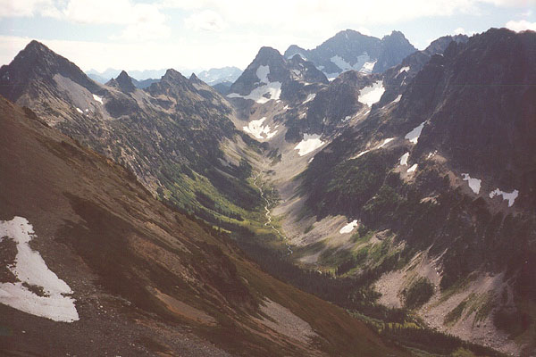
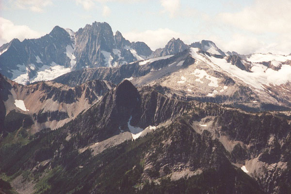
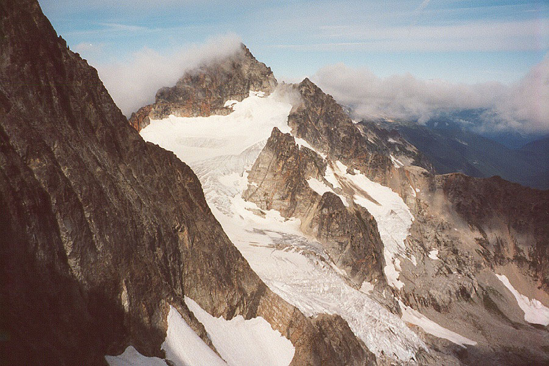

Chris Koziarz was interested, so Steve, Chris and I set out early Saturday morning, making the long drive up highway 20 to the Easy Pass trail-head a few miles past Ross Lake. We had forgone sleeping pads to save weight, but we had a stove to melt snow for water if we needed it. We had bivy sacks, sleeping bags, and technical gear, including rope, rack, ice screws, and Chris and I had a technical ice tool for the icefall.
The hike up went quickly, and we talked about climbing (of course!), relationships, and such topics. Soon, we reached a rockslide and large huckleberry fields. Stopping to eat berries slowed our progress considerably. The blue huckleberries here were the best I had ever tasted. They had a kind of “apple” taste. Steve preferred blacker berries, so we had no arguments over territory.
We easily reached the pass, and were greeted by a stunning view of Mt. Logan. It reminded Steve and I of Marmaloda, in the Dolomites of Italy. Dark, beautiful rock slabs, topped by a formidable and broken glacier, and decorated by ribs of gray rock. Fisher and Black Peaks were to the left, and Mesahchie looked very high and remote on our right. Soon we were traversing a steep hillside to reach a basin closer to the peak. After a mile of this traverse, we had blisters due to the extreme angle our boots stood at. After crossing numerous gullies and scree fans, we climbed into the basin, and to a col above at 7400 feet. We were only 1200 feet below the summit, and it couldn’t have been much past noon. This approach is really not bad at all. Plus, Chris had been here before, having climbed the peak from the south a few years ago.
We climbed down to the Mesahchie Glacier, and walked until crevasses began to appear. We roped up, and got a look at our objective: the Icefall. I was immediately cowed by it’s cliffs of ice and menacing caverns. I really didn’t believe we could do it, and uncharacteristically said I didn’t want to lead any of this, but I’d follow anything. (Normally, I have to be in deep **, then I chicken out!). Steve and Chris thought it would go, so I was curious and excited to go along.
We climbed a steeper slope to reach a crevasse we could belay a steep icy pitch from. Chris climbed out on a ramp of ice while I belayed, and was soon out of sight. He belayed Steve and I up, and Steve took off for a lead up easier slopes to an icy traverse and another crevasse belay station. The ice was very solid, and I was really enjoying myself, already amazed at the progress we had made. Now Chris took off again, and we didn’t hear or see him for some time until he yelled “keep me tight!” He must be in a difficult position somewhere. Soon enough, I found out where he had been. He had crossed a yawning, bottomless crevasse, made possible by a fin of ice rising from it’s depths. I tottered onto the fin, crampons scrabbling for purchase in the hard ice walls. A moment of precarious balancing, and I got a foot into the opposite wall. Whacking my ice tool into the wall, I was pleased to feel it stick solidly. A pull up got me off of the fin, and established on the opposite crevasse wall, where Chris had hurriedly placed an ice screw. “Whew! Chris that was something!” I was impressed, and hoped we didn’t have anything harder to deal with. I got up to the belay, and watched Steve have some fun with the crevasse. Steve took us on a long simulclimbing pitch to a final crevasse field, and we disembarked the glacier for our rock ridge. We found plenty of water here too.
Chris led a rock pitch up to a roomy flat area on the ridge. We decided to bivy here. It was after 4 pm, and we doubted there were any more flat areas ahead. We had a snowpatch for water, and a comfortable kitchen area, not to mention the incredible views down to the glacier, and across to Kimtah Peak and valleys to the west. It really is a beautiful spot.
We made hot drinks and ate dinners while mist closed in around us. Soon, we could barely see the glacier below. The forecast had prepared us for some precipitation Saturday night, but we expected a beautiful, sunny day to follow. I had an awesome dinner of freeze-dried chicken, rice and beans, and we all drank hot Gatorade. Steve and I awoke shivering after a nap, but got plenty warm after zipping up the bags completely. Without sleeping pads against the cold rock, we had all taken sections of the rope and our packs to lay on. I didn’t think I’d ever sleep, but I finally got several hours after midnight. The rest of the time, I watched the stars and glacier appear and disappear in the pervasive mist. What a strange and lonely perch we occupied! Twice we heard avalanches of collapsing ice rumbling below in the dark.
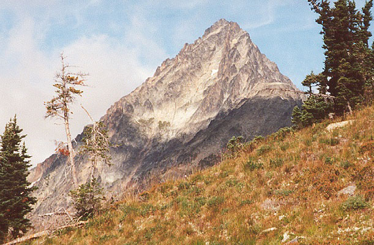
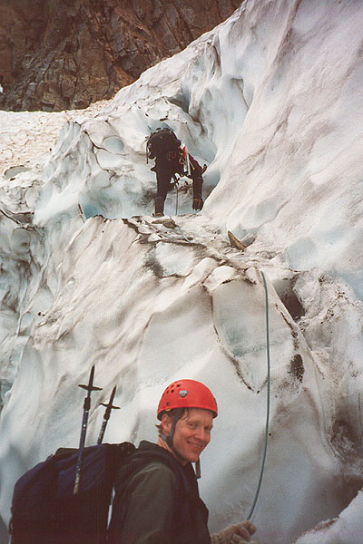
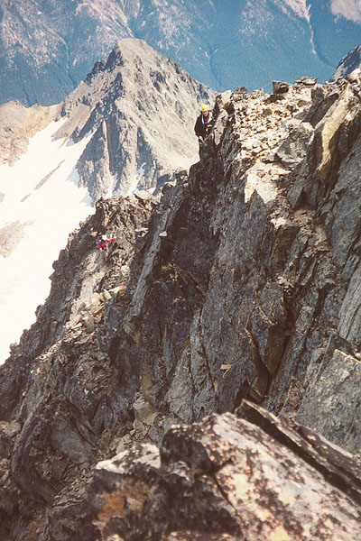
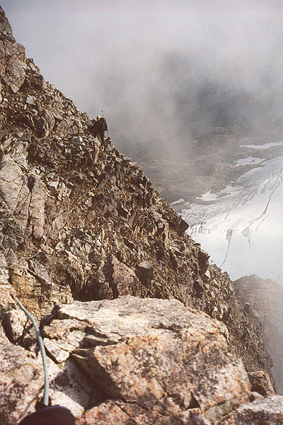
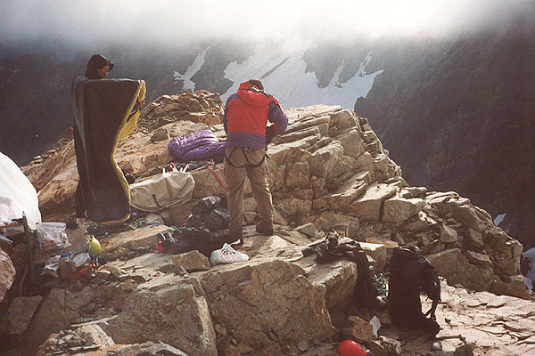
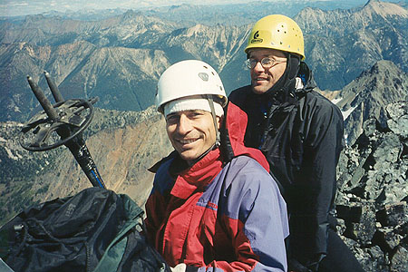
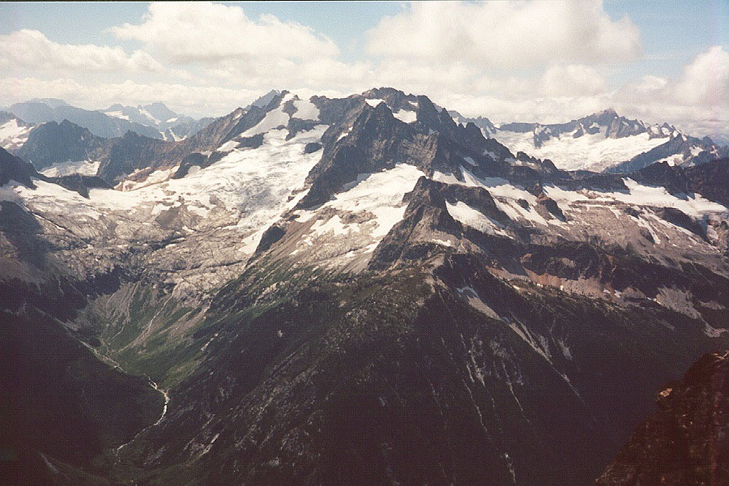
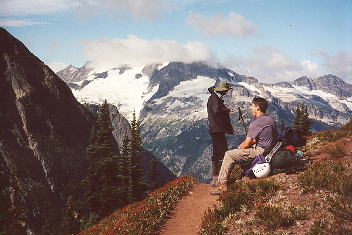
In the morning, we got some good sleep as the sun tried to burn through the mist. Steve was confident it would happen. We started climbing at 8 am. We simulclimbed on one 60 meter rope, and I slung horns or wedged gear into the rocks as I found the way up. I remember an exciting knife edge section with good rock, then a low angled rocky slope. Finally, I was out of gear at the base of steeper rock. Steve took off for a long simulclimb, over and around towers. Kimtah Peak on our right looked beautiful. The rock was good on the crest of the ridge, although rarely traveled and covered in black lichen. Then Chris led a harder pitch and belayed us up, then set off for a long simulclimb that eventually brought us to where the North Ridge tops out, meeting the East Ridge. Before Steve could reach us, I dislodged a chimney filled with rocks. He was safely on the other side, and Chris and I were only startled. But the rope had sustained a serious injury at the midpoint. Chris grimly tied a knot to isolate the frayed section of the rope.
We had a difficult wall to overcome, and I started up excitedly. Good rock and nice hand jamming in a crack propelled me up. But soon the good climbing ran out, and it became a delicate game involving large, loose blocks, crumbling handholds, and slippery, furry black lichen on every foothold. I dropped two pieces of rock protection at my feet, but was in too delicate of a situation to retrieve them. I asked Chris to get it when he followed. The short, exciting pitch came to an end, and I belayed behind a shattered tower of crumbling rock. Chris knocked a rock off, and it started a slide. The rumbling went on for 5 minutes. Finally, we were all up on the crest, and we simulclimbed on easy (but spectacularly exposed) rock to the summit. Enjoying myself, I stayed right on the crest, ignoring a few dirty trails below on the left. Soon we were shaking hands and signing the register under a flawless blue sky.
The views stretched from Eldorado Peak to Mt. Goode, from Jack to Silver Star Mountains. They included the other peaks of Ragged Ridge, with Kimtah the closest. We found D. Berdinka’s summit log entry, and Chris’s too. They were only a few days apart in 1999! It appeared that no more than 5 parties come a year. As we began to descend we understood why!
We climbed down the normal route of ascent and descent: the southeast slope. Simulclimbing, I placed gear to get down an exposed slab, then one simul-pitch followed another down steep gullies and rock walls. This side of the mountain was hot and dry, with crumbly rock. Our heavy packs slowed Steve and I down. Chris would have certainly been at the car quickly had it not been for our slow pace. It was much harder for me to be careful and stay in balance with the extra weight, especially climbing down such steep slopes ( that Chris would later call “class 2.” The mountain broke up into dozens of confusing gullies and cliffs. Chris navigated skillfully, though it had looked quite different 3 years before - there had been large amounts of snow, and now we had none. We crossed gullies and lost elevation slowly. Finally we came to a very large colouir, and had some difficult climbing on (thankfully!) solid rock into it. Chris slid down a slab while I negotiated a difficult step, and this was pulling me off the rock since the rope was tight. He hastily untied, happy to be free of the rope, and I was happy to have his weight off of it! We stowed the rope in my pack, and continued to cross gullies and slowly descend. I was getting tired of the stress, and eager to find some water. Eventually, sooner than I expected, we reached our basin from the ascent. Spirits improved dramatically, and soon we reached trail, climbing up towards Easy Pass.
Steve and Chris continued on while I drank a gallon of water from a creek. It was getting dark, and I pulled my headlamp out less than a mile from the car. I was very tired, and the log creek crossing was harder than it had been yesterday - I nearly lost my balance! Chris gave me a Polish beer, which I downed in seconds, then collapsed onto the passenger seat for the long drive home.
When I closed my eyes, I pictured the incredible climbing in the icefall, and I saw the three of us picking our way along the spiny ridge below the summit. I drifted off, sore and satisfied.
Thanks to Chris and Steve for making this an especially great trip!